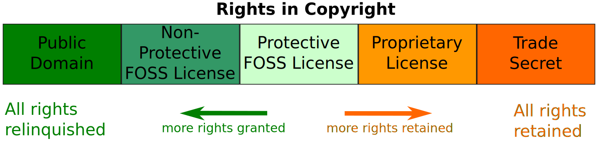

Laboratory of Software Systems
Software licensing
Danilo Pianini
2022-01-05What is a license
A legal instrument used to regulate access, use, and redistribution of software
- You generally want to retain some guarantees on the software, e.g.:
- be recognized as the original creator;
- decide whether or not someone else can redistribute it
- decide under which circumstances the software can be used
- get paid if others use it
- Law can change greatly among countries
- If you are not a lawyer, or you can’t pay a lawyer, don’t come up with your own license
- A custom license is likely to be in conflict with the law of some countries
- Better choosing something proven to work
Copyright vs. Copyleft
Copyright
Legal right that grants the creator of an original work exclusive rights for its use and (re)distribution
Copyleft
Practice (not a legal right!) in which the creators surrenders some, but not all, rights under copyright law.
- Strong: all derived works inherit the copyleft license
- Weak: some derived work may not inherit it
- Full: all the parts of the work are distributed under the terms of the copyleft license
- Partial: only some parts are covered by the copyleft license.
Ownership vs. Licensing
Ownership
Possession of a copy of software.
The possession implies right to use, even if such use implies a violation of the license (e.g. for making changes to the software, or making incidental copies).
Licensing
The software is not sold, but merely “licensed”, namely permitted to be used, under the conditions of a End-user license agreement (EULA).
Proprietary vs. Free
Proprietary
The software publisher grants the right to use a certain number of copies under the conditions of an EULA, but does not transfer ownership of the copies to the customer. Usage of the software may be subjected to acceptance of the EULA.
Free
The software publisher grants extensive rights to modify and redistribute the software, often prohibiting rolling back such rights (strong copyleft).
Freedom: as in beer vs. as in speech
Much easier for italian speakers:
- free as in speech: libero
- free as in beer: gratuito
Free as in beer
Free of charge
Free as in speech
The user receives the source code of the software, is allowed to modify and redistribute it.
- The user can be asked to pay for receiving a copy: it can be distributed behind a fee
- The author can also ask for additional money for accessing the source code
- but not “too much”
- e.g., asking for a billion dollars would make the software de-facto proprietary.
Free vs. Open source
Usually together, but:
- Open source: focus on availability of source code and right to modify and share it
- Free: focus on freedom to use the program, modify, and share it
There are non-free open source licenses:
- Apple Public source license 1.0 $\Rightarrow$ too generic
- Artistic License 1.0 $\Rightarrow$ overly vague
- Nasa Open Source Agreement
And there are free non-open source licenses as well
- WTFPL $\Rightarrow$ “public domain” is undefined in EU legislation
- Netscape public license
- OpenSSL license
Unlicensed software
- Internal business and trade secrets
- Release is unwanted
- Undisclosed, unavailable, unlicensed
- Software distributed without any license
- fully copyright protected, and therefore legally unusable
- Public domain
- At copyright termination, distributed unlicensed software becomes public domain: freely usable, modifiable, redistributable
- It takes over 100 years for software released after 2008
Proprietary licenses' constraints
- Closed volume: the customer commits to purchase a certain number of licenses over a fixed period (mostly two years).
- Licensing can be limited per user, CPU, concurrent usage, etc.
- Maintenance and support: proprietary licenses usually include forms of maintenance and support
- Warranty: proprietary licenses often include a warranty
- Typically time limited
- Typically with purcheasable extensions
GNU GPLv3
GNU General Public License
- Free and open source
- Strong copyleft: derived work must be released under a compatible license
- Does not allow linking from non GPL-compatible licensed software!
- If you want your software to be used as a dependency of proprietary software, don’t use this license!
GNU LGPLv3
GNU Lesser General Public License (LGPL)
- A modification of the GPLv3 with a linking exception
- Not an entirely different license as the previous LGPL
- Free and open source
- Strong copyleft: derived work must be released under a compatible license
- Allows linking from code with a different license
- Work linking the LGPL library (combined work) must:
- Allow modification of the original linked library shipped with the work
- Allow reverse engineering and debugging of the combined work
- These requirements are often unacceptable for companies!
GNU GPL with linking exception
GNU General Public License with linking exception
- Can be built on top of a GPL, by manually adding an exception for linking
- Free and open source
- Strong copyleft: derived work must be released under a compatible license
- Allows linking from code with a different license without further restrictions
- Combined work can be redistributed under non GPL-compatible licenses
Example exception
Linking this library statically or dynamically with other modules is making a combined work based on this library.
Thus, the terms and conditions of the GNU General Public License cover the whole combination.
As a special exception, the copyright holders of this library give you permission to link this library with
independent modules to produce an executable, regardless of the license terms of these independent modules, and to
copy and distribute the resulting executable under terms of your choice, provided that you also meet, for each linked
independent module, the terms and conditions of the license of that module. An independent module is a module which
is not derived from or based on this library. If you modify this library, you may extend this exception to your
version of the library, but you are not obliged to do so. If you do not wish to do so, delete this exception
statement from your version.
MIT License
- Extremely permissive
- Free and open source
- GPL compatible
- No copyleft: the work or a derivative can be redistributed under any other license
- Does not protect trademarks
- Does not protect patent claims
Apache License 2.0
- More restrictive than MIT
- Free and open source
- GPL compatible
- No copyleft: the work or a derivative can be redistributed under any other license
- Protects trademarks
- Allows for placing a warranty
- Protects patent claims
- Forces authors of derived works to state significant changes made to the software
- If a
NOTICEfile with authors is provided, it must be included when redistributed. Entries can be appended.
WTFPL
- Extremely permissive but problematic
- A good example of how things may go wrong if you write licenses without competence
- Free, not open source
- No copyleft
- Better use something else
DO WHAT THE FUCK YOU WANT TO PUBLIC LICENSE
Version 2, December 2004
Copyright (C) 2004 Sam Hocevar <sam@hocevar.net>
Everyone is permitted to copy and distribute verbatim or modified
copies of this license document, and changing it is allowed as long
as the name is changed.
DO WHAT THE FUCK YOU WANT TO PUBLIC LICENSE
TERMS AND CONDITIONS FOR COPYING, DISTRIBUTION AND MODIFICATION
0. You just DO WHAT THE FUCK YOU WANT TO.
FOSS Licence compatibility


Creative Commons
- Set of licenses with increasing copyleft
- not designed for software
- Good for data (including databases), documentation, and resources
Available rights
BY(Attribution) – Derivative works must credit the original authorSA(Share-alike) – Enables copyleftNC(Non-commercial) – — Derivative work can only be used for non commercial purposesND(No derivative Works) – Free distribution and copy, but derivatives are forbidden
Valid combinations
CC0– Public domain (prefer the MIT licens for a similar protection)CC-BY– AttributionCC-BY-SA– Attribution, Share-alike (enables copyleft)CC-BY-NC– Attribution NoncommercialCC-BY-NC-SA– As above, plus copyleftCC-BY-ND– Attribution Noderivatives (commercially usable, but not modifiable)CC-BY-NC-ND– As above, non commercial
Applying a License
- Create a
LICENSEorCOPYINGplain text file in the repository with the full license text- Full text can be easy found online
- Change the owner and the copyright year
- Apply a copyright notice header to every source file
- Use an automated tool to do it
- Most IDEs can deal with this
- Header templates are usually available where the license is published
Your software is now licensed!